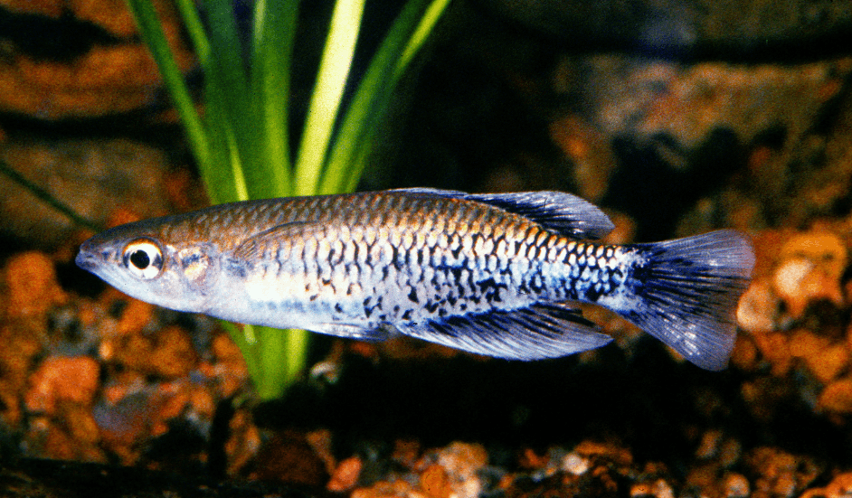

Systématique
- Ordre : Atheriniformes
- Famille : Bedotiidae
- Genre : Bedotia
- Espèce : B. leucopteron

Bedotia leucopteron est une espèce de poisson arc-en-ciel malgache décrite en 2007 par Loiselle et Rodriguez. Son nom spécifique, leucopteron (du grec ancien signifiant "aile blanche"), fait référence aux marges blanches distinctives de ses nageoires. C'est un poisson de taille moyenne, les mâles adultes atteignant environ 8 à 10 cm de longueur totale.
Morphologiquement, il possède un corps fusiforme et comprimé latéralement. La coloration de base est gris-vert olive avec une bande médio-latérale sombre qui s'estompe vers la queue. La caractéristique la plus frappante de cette espèce réside dans ses nageoires impaires (dorsale, anale et caudale) : chez les mâles en période de frai, elles arborent une large bordure blanche opaque, contrastant avec des zones submarginales rouges ou sombres selon l'état d'excitation.
Comme la plupart des membres de sa famille, Bedotia leucopteron est une espèce grégaire qui doit être maintenue en groupe (minimum 6 à 8 individus). C'est un nageur actif de pleine eau, occupant principalement les zones supérieures de l'aquarium. Il est pacifique, bien que les mâles paradent fréquemment pour établir une hiérarchie sans jamais s'infliger de blessures sérieuses.
En milieu naturel, ils sont souvent trouvés dans des eaux claires et bien oxygénées. Ils apprécient un environnement riche en cachettes périphériques (plantes denses) tout en conservant un large espace central pour la nage. C'est une espèce robuste une fois acclimatée, mais elle reste sensible aux pics de nitrites et aux variations brusques de température.
Mode : Ovipare, pondeur sur substrat (mousses ou racines).
La reproduction est typique des poissons arc-en-ciel. Les mâles paradent intensément devant les femelles, leurs nageoires à liseré blanc étant alors particulièrement visibles. La ponte a lieu quotidiennement sur plusieurs jours, la femelle libérant quelques œufs adhésifs munis de filaments. Ces œufs s'accrochent aux plantes fines ou aux mops de ponte.
Il n'y a pas de soin parental. À une température de 24 °C, l'éclosion survient après environ une semaine. Les alevins sont très fins et nagent immédiatement sous la surface. Ils peuvent être nourris avec des infusoires ou des micro-vers, puis rapidement avec des nauplies d'artémias.
Dimorphisme sexuel : Très marqué. Le mâle est plus grand, plus robuste et possède des nageoires beaucoup plus colorées et développées, notamment avec le liseré blanc caractéristique. La femelle est plus petite, plus terne, avec des nageoires plus courtes et un abdomen plus rebondi.
Espérance de vie : En aquarium, l'espèce peut vivre de 4 à 6 ans si les conditions de maintenance sont optimales.
Bedotia leucopteron est endémique de la région nord-est de Madagascar, principalement dans le bassin du fleuve Sambava et de la rivière Bemarivo. On le trouve dans des ruisseaux et rivières de forêt pluviale, souvent dans des zones où le courant est modéré. L'eau y est généralement douce et acide à neutre (pH 6.0 à 7.2), avec une température oscillant entre 22 et 26 °C.
Le milieu naturel est caractérisé par un fond de sable ou de gravier, jonché de feuilles mortes et de bois immergé, offrant de nombreux refuges. L'espèce est malheureusement menacée par la perte d'habitat due à la déforestation et à la sédimentation des cours d'eau.
Répartition

Origine naturelle :
- Madagascar : Nord-est de l'île (Bassins des fleuves Sambava et Bemarivo).
- Localité type : Ruisseau de drainage dans le bassin de la rivière Bemarivo.
- Espèce dont la distribution est limitée aux forêts tropicales humides résiduelles de la côte est.
Classée comme espèce menacée en raison de la pression anthropique sur son habitat restreint.
Paramètres de maintenance
Température : 22 à 26 °C (24 °C idéal pour la reproduction).
pH : 6.2 à 7.5.
GH : 4 à 10 °dGH.
Courant : Modéré à fort; une excellente filtration et une oxygénation efficace sont recommandées.
Volume conseillé : Minimum 150-200 litres pour un groupe de 8 individus, avec une longueur de façade d'au moins 100 cm.
Régime alimentaire
Régime : Omnivore à dominante carnivore (insectivore).
En aquarium, il accepte volontiers les nourritures sèches (paillettes, granulés de petite taille). Cependant, pour observer les meilleures couleurs et favoriser la reproduction, un apport régulier en nourriture vivante ou congelée est indispensable : daphnies, artémias, cyclops et vers de vase.
Ils se nourrissent principalement en surface ou en milieu de colonne d'eau.